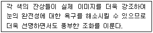
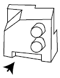
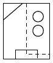
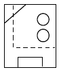
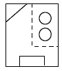
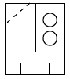
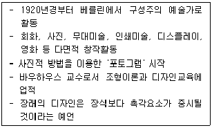

시각디자인산업기사 (2006-03-05 기출문제)
1과목: 색채학
1. 다음 중 색의 3속성은?
- 청색, 탁색, 명색
- 빨강, 파랑, 노랑
- 진출, 후퇴, 팽창
- 색상, 명도, 채도
(정답률: 알수없음)

2. "Color Harmony Manual"은 누구의 이론을 기본으로 간행되었는가?
- 먼셀의 색채 조화론
- 오스트발트의 색채 조화론
- 문,스펜서의 색채 조화론
- 쟈드의 색채 조화론
(정답률: 알수없음)
3. 에메랄드, 바다, 산 등을 연상시키며 평화, 안정, 희망 등을 상징하는 색상은?
- 보라
- 파랑
- 녹색
- 흰색
(정답률: 알수없음)
4. 다음은 어떤 배색에 대한 설명이다. 알맞은 배색은 어느 것인가?

- 4색조화
- 보색조화
- 동일색상조화
- 유사톤조화
(정답률: 알수없음)
5. 다음 관용색명 중 파랑 계통에 속하는 색은?
- 풀색
- 물색
- 진남색
- 청자색
(정답률: 알수없음)
6. 다음 중 흰 피부에 금발을 가진 여자에게 대비적 효과를 크게 주어 가장 인상적인 느낌을 줄 수 있는 옷의 색은?
- 녹색
- 파랑
- 흰색
- 빨강
(정답률: 알수없음)
7. 색상환에서 가장 먼 정반대쪽의 색은?
- 유사색
- 등색
- 보색
- 인근색
(정답률: 알수없음)
8. 색의 항상성에 대한 설명 중 옳은 것은?
- 검정에 둘러쌓인 흰 색은 주위의 횐색보다 어둡게 보인다.
- 가는 줄무늬 패턴의 면은 배경색이 줄무늬 색 기미를 띠어 보인다.
- 백지는 어두운 곳이나 밝은 곳이나 백지로 인지된다.
- 검정 원을 한참 보다가 벽을 보면 흰 원이 나타나 보인다.
(정답률: 알수없음)
9. 색지각과 측색의 3요소가 아닌 것은?
- 광원
- 스펙트럼
- 물체
- 시각
(정답률: 알수없음)
10. 측색결과를 활용하기 앞서 색채측정의 결과에 반드시 첨부해야 할 사항이 아닌 것은?
- 색온도
- 표준광의 종류
- 표준 관측자
- 색채측정 방식
(정답률: 알수없음)
11. 팽창, 수축감과 동시에 관찰될 수 있는 지각 효과와 가장 관계 깊은 것은?
- 연상색과 상징색
- 기억색과 연상색
- 진출색과 후퇴색
- 시인성과 항상성
(정답률: 알수없음)
12. 다음 색의 연상과 사용에 관한 설명 중 가장 잘못된 것은?
- 빨강, 주황 등은 식욕을 증진시키는 색이다.
- 파랑, 하늘색 등은 일반적으로 청결한 이미지이다.
- 금속색(주로 은회색 등)은 첨단적, 현대적이라는 이미지를 나타낸다.
- 검정색은 죽음, 공포, 암흑을 연상시키므로 공업제품의 색으로는 절대 사용치 않고 있다.
(정답률: 알수없음)
13. 다음 색에 관한 설명 중 잘못된 것은?
- 저명도, 즉 어두운 색은 소리의 낮은 음을 느낀다.
- 순색에 가깝고 선명한 색은 예리한 음을 느낀다.
- 붉은 계열의 색상은 시간의 경과함을 짧게 느낀다.
- 짠맛은 연한 녹색이나 회색과 관련이 있다.
(정답률: 알수없음)
14. 다음 문,스펜서의 색채조화론 중 맞지 않는 것은?
- 동일의조화(identity)
- 유사의 조화(similarity)
- 대비의조화(contrast)
- 통일의 조화(unity)
(정답률: 알수없음)
15. 다음 설명 중 옳은 것은?
- 망막의 중심부에는 간상체만 있다.
- 추상체는 명암과 관계가 있다.
- 추상체 시각은 장파장에 민감하다.
- 추상체가 주로 작용하는 시각상태를 암소시라고 한다.
(정답률: 알수없음)
16. 먼셀 표색계의 특징에 관한 설명 중 잘못된 것은?
- 명도 5를 중간 명도로 한다.
- 실제 색입체에서 N9.5는 흰색이다.
- R과 Y의 중간색은 0로 표시한다.
- 5Y9/10은 존재하지 않는다.
(정답률: 알수없음)
17. 감산혼함에 의해 얻을 수 없는 색은?
- 노랑
- 보라
- 갈색
- 청록
(정답률: 알수없음)
18. 일반적인 색채조화에 관한 설명 중 가장 부적합한 것은?
- 동일, 유사색상끼리의 배색의 부드러움 느낌을 준다.
- 무채색 배색에서 검정과 흰색의 배색은 강한 인상을 준다.
- 식당을 보라색과 노랑색으로 배색하면 식욕을 높이는 효과가 크다.
- 2가지 이상의 배색에서 색의 3속성이 모두 예민한 차이를 가지면 조화되기 어렵다.
(정답률: 알수없음)
19. 색채조절시 고려할 사항으로 관계가 적은 것은?
- 개인의 기호
- 색의 심리적 성질
- 사용 광간의 기능
- 색의 물리적 성질
(정답률: 알수없음)
20. 먼셀의 표색계를 설명한 것 중 옳은 것은?
- 헤링의 4원색설을 기본으로 하고 있다.
- 명도축에는 1에서 14까지 번호가 붙어지고 있다.
- 주요 5색은 R,Y,G,B,P 이다.
- W + B + C = 100%라는 공식이 성립된다.
(정답률: 알수없음)
2과목: 인쇄 및 사진기법
21. 스튜디오 촬영에 대한 설명 중 틀린 것은?
- 스튜디어내에서 이어지는 정물의 촬영에는 텅스텐 조명을 사용하기도 한다.
- 스튜디어내에서 이루어지는 움직이는 물체의 사진촬영에는 스트로보를 많이 사용한다.
- 스튜디오 촬영을 위하여 노출을 측정할 때는 반드시 반사광식의 노출계를 사용해야 한다.
- 데이라이트용의 필름을 사용하여 텅스텐 조명하에서 촬영을 하면 붉게 나오므로 필터를 사용하여 색온도를 조절해 주어야 한다.
(정답률: 알수없음)
22. 일반적으로 PS판을 사용하여 인쇄 하였다면 무슨 인쇄 방식에 속하는가?
- 블록판
- 오목판
- 공판
- 평판
(정답률: 알수없음)
23. 다음 필터 중에서 흑백사진과 컬러사진에서 빛의 양을 중일 목적으로 사용되는 필터는?
- ND 필터
- Red 필터
- YG 필터
- O2 필터
(정답률: 알수없음)
24. 필름에 노광되지 않은 부분에 환원은이 발생하여 흑화 현상이 나나타는 것을 무엇이라고 하는가?
- 포그(Fog)
- 포스터리제이션
- 솔라리제이션
- 포토몽타쥬
(정답률: 알수없음)
25. 판이 깊이에 따라 계조를 나타내기 때문에 농담이 풍부하고 강한 느낌을 줌으로써 각종 유가증권, 지폐, 미술인쇄물 우표 인쇄와 포장 인쇄, 건축재료 인쇄에 사용되는 방식은?
- 볼록판 인쇄
- 평판인쇄
- 스크린 인쇄
- 그라비어 인쇄
(정답률: 알수없음)
26. 광화학적 제판법에 속하지 않는 것은?
- 원색판
- 사진평판
- 그라비어판
- 연판
(정답률: 알수없음)
27. 가독성이 뛰어나 서적이나 신문 등의 본문 서체로 널리 사용되는 서체는?
- 궁서체
- 고딕체
- 명조체
- 해서체
(정답률: 알수없음)
28. 촬영시 빛의 표면반사를 제거하기 위하여 사용하는 필터는?
- 편광필터
- 광량감소 필터
- 다양성 필터
- 색보정 필터
(정답률: 알수없음)
29. 가시광선의 파장범위를 표시한 것은?
- 200nm ~ 900nm
- 380nm ~ 780nm
- 10nm ~ 1000nm
- 380nm ~ 1500nm
(정답률: 알수없음)
30. 흑백인화시 사진의 한부분의 tone을 약화 시켜주는 인화 방법은?
- 버닝(Burning)
- 다징(dodging)
- 트리밍(trimming)
- 크로핑(cropping)
(정답률: 알수없음)
31. 제책 공정에서 속장과 겉장은 연결하는 부분이며 속장의 내구력을 좌우하는 중요한 공정은?
- 접지(folding)
- 면지 붙이기 (end paper)
- 쪽 맞추기(gathering)
- 고르기(pressing)
(정답률: 알수없음)
32. 패닝(panning)에 대한 설명 중 틀린 것은?
- 동체의 움직임에 맞춰 카메라를 움직이면서 촬영하는 방법이다.
- 패닝을 할 수 있는 피사체는 카메라의 대해 90도 각도로 이동하는 것이 좋다.
- 운동방향이 각기 다른 피사체의 움직임을 나타내는데 적절하다.
- 알맞은 흐름과 셔터 속도의 선택이 중요하다.
(정답률: 알수없음)
33. 인쇄용으로 사용하는 원칙적인 인쇄용지 전지의 크기 비율(단변과 장변)로 가장 옳은 것은?
- 1 : 1
- 1 : √2
- 1 : 3
- 1 : 2
(정답률: 알수없음)
34. 스톱실린더 인쇄기와 관련 있는 인쇄기는?
- 평압인쇄기
- 원압인쇄기
- 윤전인쇄기
- 오프셋평판인쇄기
(정답률: 알수없음)
35. 일반적인 적외선 잉크의 특성으로 가장 올바른 것은?
- 잉크의 건조 시간이 매우 느리다.
- 적외선 건조 장치에서만 경화, 건조가 된다.
- 잉크의 보관이 까다로워서 사용하기 불편하다.
- 광택이 좋고 내마찰성이 강한 인쇄물을 제작할 수 있다.
(정답률: 알수없음)
36. 필름 유제충에 입사한 빛의 일부가 유제층 안에서 반사또는 굴절하여 화상의 선명도를 낮추는 현상은?
- 이레이디에이션 (irradiation)
- 선예도 (sharpnee)
- 할레이션(halation)
- 콘트라스트(contrast)
(정답률: 알수없음)
37. 감광재료로 사용할 수 있는 할로겐화은(Agx)이 아닌 것은?
- Agl
- AgBr
- AgCu
- Agcl
(정답률: 알수없음)
38. 속장과 등 사이에 공간이 있는 형태로서 표지의 크기가 속장보다 큰 제책 방식은?
- 양장제책
- 반양장제책
- 호부장제책
- 무선철제책
(정답률: 알수없음)
39. 플래시 촬영시 특징이 아닌 것은?
- 어느 곳이든 광원을 쉽게 가져갈 수 있다.
- 어두운 곳에서 빨리 움직이는 물체를 포착 할 수 있다.
- 역광 촬영에서도 부자연한 그늘은 없애기 밝게 찍을 수 있다.
- 노출이 부족해서 아무곳에서나 사용할 수 없다.
(정답률: 알수없음)
40. 가장 원시적인 인쇄방식에 의해 인쇄되는 기계는?
- 원압식 인쇄기
- 평압식 인쇄기
- 윤적식 인쇄기
- 플렉소 인쇄기
(정답률: 알수없음)
3과목: 시각디자인론
41. 시각디자인에 있어서 설득적 기능을 갖는 것은?
- 도표
- 심볼마크
- 영화
- 신문광고
(정답률: 알수없음)
42. 물체의 모든 면을(육면체의 3면) 투상면에 경사시켜 놓고 수직투상을 한 것은?
- 정투상
- 축측투상
- 표고투상
- 사투상
(정답률: 알수없음)
43. 기본적인 형태의 반복, 동심원 등의 기하학적인 문양에 대한 선호가 특징으로 낙관적이고 향략적인 분위기가 잘 드러나는 디자인 사조는?
- 모던 스타일
- 아르데코
- 포스트모더니즘
- 아르누보
(정답률: 알수없음)
44. 형태를 지각할 때 심리상태, 흥미도, 관심도, 기억 경험등에 영향을 받는다는 이론은?
- 루빈이론
- 뮐러이론
- 버트하이머이론
- 게슈탈튀이론
(정답률: 알수없음)
45. 미국의 현대 디자인에 관한 설명이다. 틀린 것은?
- 세계경제공황은 판매를 위한 디자인에서 장식을 위한 디자인으로 미국의 디자인을 변화시켰다.
- 1919년 공업디자인이라는 용어가 미국의 디자이너에 의해 처음 사용되었다.
- 독일 바우하우스의 조형이념이 미국으로 이식되어 미국의 공업디자인 발전 계기가 되었다.
- 1930년대 유선형 디자인은 운동과 연관이 없는 일반 제품에까지 유용되었다.
(정답률: 알수없음)
46. 순수형태의 기하학적 정의가 잘못된 것은?
- 점-위치만 있고 크기가 없다.
- 선-면의 이동 흔적이다.
- 면-선의 이동 흔적이다.
- 입체-면의 이동 흔적이다.
(정답률: 알수없음)
47. 질과 양이 다른 2가지가 대립하는 효과를 일컫는 디자인 원리는?
- symmetry
- gradation
- accent
- contrast
(정답률: 알수없음)
48. 다음의 요소 중 소비자 구매 행동에 가장 큰 영향을 주는 것은?
- 문화
- 교육
- 가족
- 친구
(정답률: 알수없음)
49. 다음 겨냥도를 화살표 방향으로 투상한 도면으로 적합한 것은?





(정답률: 알수없음)
50. 기업디자인 관련하여 어떠한 형상,의미를 만들어 낼 것인가 하는 방칭들을 몇 개의 키포인트로 집약한 것으로 그 방향을 명확하게 잡아나가기 위한 것은?
- 네이밍(naming)
- 크리에이티브(Creative)
- 시그니춰 시스템(Signature Ststem)
- 이미지 컨셉(Image Concept)
(정답률: 알수없음)
51. 복고주의적 장식에서 탈피, 혁신적인 "새로움"을 만들어낼 것인가 하는 방침들을 몇 개의 키포인트로 집약한 것으로 그 방향을 명확하게 잡아 나가기 위한 것은?
- 로버트 벤츄리
- 간결성, 순수성, 합리성
- 양식의 다양화
- 절충주의와 혼성모방
(정답률: 알수없음)
52. 디자인 정책에 대한 설명으로 옳지 않은 것은?
- 본질적인 정책은 통일성 있는 디자인 폴리시를 세우는 것이다.
- 디자인 전반 및 유통에 이르기까지 통일성으로 이미지의 제고가 요구된다.
- 우수한 디자인 일관성 있는 디자인 정책이 병행되어야 한다.
- 판매성과를 올리기 위해 소비자와의 직접적인 접촉이 필요하다.
(정답률: 알수없음)
53. 기계, 건축 등의 복잡한 도면에서일부분의 축척을 바꾸어 모야, 치수, 기구 등을 분명히 하기 위해 그려진 것은?
- 결선도
- 조립도
- 부품도
- 상세도
(정답률: 알수없음)
54. 다음 중 기계적인 대량생산 방식을 디자인에 적극적으로 도입하는데 배타적인 입장을 취했던 것은?
- 미술공예운동의 디자이너들
- 바우하우스의 디자이너들
- 독일공작연맹의 디자이너들
- 미국의 대공항기(1920년대) 이후의 디자이너들
(정답률: 알수없음)
55. 건축물의 각 부분간의 상관된 비례를 게량하는 기준 척도는?
- 모듈(Module)
- 대칭(Symmetry)
- 비례(Proportion)
- 대비(Contrast)
(정답률: 알수없음)
56. 정확한 묘사력을 기본으로 형태를 변형하여 임팩트를 강하게 하는 표현 방법은?
- 데칼코마니
- 데포르마시옹
- 마아블링
- 몽타쥬
(정답률: 알수없음)
57. 다음은 누구에 대한 설명인가?

- 모홀리 나기
- 르 꼬르뷔제
- 발터 그로피우스
- 윌리엄 모리스
(정답률: 알수없음)
58. 입체도에 대한 설명으로 적합하지 않은 것은?
- 입체도에는 정투상도, 사투상도, 투시도 등 세 가지 주요분류가 있다.
- 정투상도에서는 물체의 한 면이 화면과 평행하게 된다.
- 평면 사투상도, 입면 사투상도가 사투상도에 속한다.
- 투시도는 화면에 각기 다른 각도에서 선들이 그려저 하나의 소점에 모인다.
(정답률: 알수없음)
59. 시장분석에 의해 경쟁사의 제품 기획 태도, 디자인 폴리시 등을 알 수 있는 생산상의 디자인 관리 요소는?
- 시장분석, 경쟁상품에 대한 조사
- 의장등록, 특허조사
- 출판물에 대한 조사
- 소비자 여론조사
(정답률: 알수없음)
60. 독일공작연맹(DWB)의 창설에 가장 중심적 역할을 한 인물은?
- 존 러스킨
- 윌리엄 모리스
- 헤르만 무테지우스
- 윌터 그로피우스
(정답률: 알수없음)
4과목: 시각디자인실무 이론
61. 패키지(포장)의 기능이 아닌 것은?
- 보호와 보존성
- 편리성
- 상품성
- 지역성
(정답률: 알수없음)
62. 간접광고 형태로서 흔히 PP(Product placement)광고를 들 수 있는데 이에 대한 보기로서 가장 적절한 것은?
- 소매점의 점두광고
- 신문 속의 전단광고
- 영화 속의 상품광고
- 우편물의 표본 광고
(정답률: 알수없음)
63. TV 기업 광고를 설명한 것 중 거리가 먼 것은?
- 전달하려는 메시지를 직접적으로 표현함으로써 상품이나 서비스에 대한 선호도를 높이려 한다.
- 기업광고는특정 기업이나 공공 기관의 이미지 제고 형태에 주로 활용 된다.
- 기업의 경영 이념이나 상품의 공익성을 나타내주는 짤막한 다큐멘터리나 시리즈물로 구성된다.
- 환경개선이나 문화활동을 적극 지원하는 공익성 기업임을 부각시키는 것이 전형적 예라고 할 수 있다.
(정답률: 알수없음)
64. 스토리텔링(Storytelling) 마케팅 기법을 설명한 것 중 틀린 것은?
- 문학에서 처음 나온 용어로 이야기를 들려주듯 광고 마케팅에서도 사용하고 있다.
- TV광고에서 이야기가 있는 광고들이 이것의 한 일종이다.
- 소비자는 상품 그 자체를 사는 것이 아니라 상품에 얽힌 이야기를 산다.
- 소비자의 이성에 호소하여 구매 욕구를 자극하는 방법을 주로 사용한다.
(정답률: 알수없음)
65. 기업 상품광고를 잡지광고로 하고자 할 때 다음 중 일반적으로 가장 효과가 큰 지면은?
- 속차면
- 표지2면
- 표지3면
- 표지4면
(정답률: 알수없음)
66. 사진 또는 일러스트레이션에서 본문과는 별도로 붙이는 짧은 설명문은?
- 보디카피
- 슬로건
- 캡션
- 로고타입
(정답률: 알수없음)
67. 인쇄물의 재단선까지 이미지가 인쇄되도록 레이아웃 하는 방법을 지칭하는 용어는?
- 트리밍
- 시즈님
- 블리드
- 그리드
(정답률: 알수없음)
68. 다음 중 보도란 광고는 어느 것인가?
- 임시물광고
- 기업광고
- 돌출광고
- 안내광고
(정답률: 알수없음)
69. 교통광고 디자인의 형태별 분류에 속하는 것은?
- 역내광고
- 포스터형 광고
- 동적광고
- 정적광고
(정답률: 알수없음)
70. 인류의 미래를 주도할 첨단 산업기술 중 디지털 미디어에 기반한 첨단문화 예술산업을 발전시키기 위한 기술을 총칭하는 분야를 지칭하는 것은?
- IT
- CT
- ET
- BT
(정답률: 알수없음)
71. 제품 포지셔닝에 대한 설명으로 가장 합닿한 내용은?
- 자사 브랜드의 이미지를 만들어내거나 이미 존재하고 있는이미지를 강화할 목적으로 소비자의 머릿속에 제품의 위치를 부여하는 시장 전략이다.
- 이미 소비자의 머리속에 만들어져 있는 기존의 브랜드 이미지를 수정할 목적으로 새로운 위치를 부여하는 시장 전략이다.
- 소비자가 자사 제품을 보다 편하게 구매하도록 하기 위하여 유통업체가 운영하는 가게의 선반 위치를 항상 일정하게 유지하도록 하는 시장 전략이다.
- 유명인이나 특정한 캐릭터가 가지고 있는 이미지를 이용하여 여기에 자사의 제품이미지를 위치시키는 시장 전략이다.
(정답률: 알수없음)
72. 일정지역에 특성 상품의 총 매상고 혹은 총 출하량이 차지하는 특정기업의 비율을 나타내는 용어는?
- Mind Share
- Image Share
- Market Share
- Cinsumer Share
(정답률: 알수없음)
73. 마케팅 전략에 있어서 시장 세분화의 방법이 아닌 것은?
- 제품의 사용 빈도별, 상표 충성도별로 나누어보는 사용자 행동 특성별 세분화
- 서비스, 포장, 광고, 상표, 외관에 의한 심리적 특성별 세분화
- 지역, 도시크기, 인구, 기후별로 나누어 보는 지리적 특성별 세분화
- 연령, 성별, 결혼상태별, 수입별, 직업별, 교육수준별로 나누어보는 인구학적 특성멸 세분화
(정답률: 알수없음)
74. 노이라스가 만든 것으로 언어가 통하지 않아도 커뮤니케이션이 가능한 것으로 현대 그래픽 심볼의 모체가 된 것은?
- 아이소타입
- 시멘토그래피
- 로고그램
- 포토그램
(정답률: 알수없음)
75. 트레이드 마크가 상품을 전제로 하고 있듯이 금융, 보험 운수, 통신 등의 서비스를 전제로 하여 작성된 기업 고유의 마크나 로고 타입을 무엇이라 하는가?
- 브랜드마크
- 엠블렘
- 서비스마크
- 심볼마크
(정답률: 알수없음)
76. '눈 화장품을 다량 사용하는 사람의 라이프 스타일은 대체적으로 ( )고 잘 교육받았으며, 도시지역에 살고 있다.'라고 할 때의 측정방식을 나타내고 있는 항목은?
- 제품사용의 특성
- 인구통계학적 특성
- 매체 선호성의 특성
- 활동, 관심사, 견해의 특성
(정답률: 알수없음)
77. 교통광고의 특성을 설명한 내용 중 틀린 것은?
- 소구대상을 지역에 따라 세분화할 수 있기 때문에 상관에 알맞은 광과를 할 수 있다.
- 생활에 필요한 이동의 중간에 접촉하는 광고 매체이므로 구매 행동과의 연결성이 강하다.
- 지역에 따라 여러 가지 교통기관을 연계해서 편성해야 하므로 계획의 조정이 불가능하다.
- 도시의확장으로 광고에 대한 접촉 시간이 배교적 길기 때문에 높은 주목률을 기대할 수 있다.
(정답률: 알수없음)
78. 계죠(Greadation)란?
- 계속적으로 반복, 나열함으로써 나타나는 어떠한 형태
- 서로 비슷한 형태들이 하나가 되려고 하는 성격이나 형태
- 색이나 빛 등에서의 규칙적인 변화나 점진적인 추이
- 두 개 이상의 부분 또는 요소의 상호관계에 의한 시감각
(정답률: 알수없음)
79. 시각커뮤니케이션 기본적인 구성요소가 아닌 것은?
- 매체(메세지)
- 송신자
- 의견수럼자
- 수신자
(정답률: 알수없음)
80. 다음 중 BI(Brand Identity)를 가장 적절하게 설명한 것은?
- 브랜드의 지명도를 높히기 위해 이벤트나 광고로 판매 촉진을 하는 일
- 브랜드 구성 요소를 일관성, 주체성 있게 좋은 이미지로 형성 시키는것
- 상품을 수출하기 위해 상품명을 영문자로 통일하여 표기하는 일
- 상품에 이름을 붙여 사전에 테스트하여 수요 예측을 미리 해보는 것
(정답률: 알수없음)